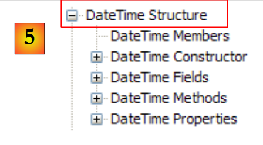
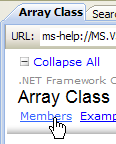
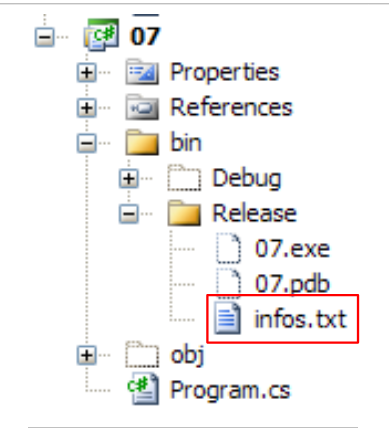
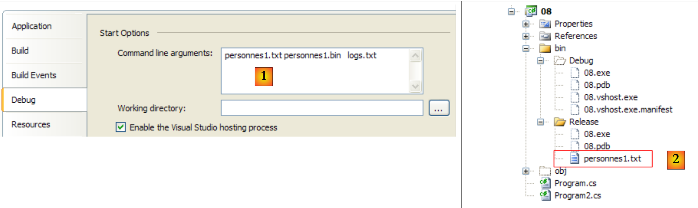

5. Häufig verwendete .NET-Klassen
Wir stellen hier einige häufig verwendete Klassen der .NET-Plattform vor. Zuvor zeigen wir Ihnen jedoch, wie Sie Informationen zu den Hunderten von verfügbaren Klassen abrufen können. Diese Hilfe ist selbst für den erfahrensten C#-Entwickler unverzichtbar. Die Qualität der Hilfe (einfacher Zugriff, übersichtliche Gliederung, Relevanz der Informationen usw.) kann über den Erfolg oder Misserfolg einer Entwicklungsumgebung entscheiden.
5.1. Hilfe zu .NET-Klassen finden
Wir geben hier einige Tipps, wie Sie Hilfe mit Visual Studio.NET finden
5.1.1. Hilfe/Inhalt
 |
- Wählen Sie in [1] die Option „Hilfe/Inhalt“ aus dem Menü.
- Wählen Sie in [2] die Option „Visual C# Express Edition“
- in [3] den C#-Hilfebaum
- in [4] ist eine weitere nützliche Option das .NET Framework, das Zugriff auf alle .NET-Framework-Klassen bietet.
Werfen wir einen Blick auf die Kapitelüberschriften in der C#-Hilfe:
 |
- [1]: Ein Überblick über C#
- [2]: Eine Reihe von Beispielen zu bestimmten Aspekten von C#
- [3]: Ein C#-Kurs – könnte das vorliegende Dokument ersetzen.
 |
- [4]: Um mehr über C# zu erfahren
- [5]: nützlich für C++- oder Java-Entwickler. Hilft, einige Fallstricke zu vermeiden.
- [6]: Wenn Sie nach Beispielen suchen, können Sie dort beginnen.
 |
- [7]: Was Sie wissen müssen, um grafische Benutzeroberflächen zu erstellen
- [8]: So nutzen Sie die IDE Visual Studio Express optimal
 |
- [9]: SQL Server Express 2005 ist ein hochwertiges, kostenlos vertriebenes Datenbankmanagementsystem. Es wird in diesem Kurs verwendet.
Die C#-Hilfe ist nur ein Teil dessen, was der Entwickler benötigt. Der andere Teil ist die Hilfe zu den Hunderten von Klassen im .NET-Framework, die ihm die Arbeit erleichtern werden.
 |
- [1]: Hilfe zum .NET-Framework auswählen
- [2]: Die Hilfe befindet sich im .NET Framework SDK
- [3]: Der Zweig „.NET Framework Class Library“ präsentiert alle .NET-Klassen entsprechend dem Namespace, zu dem sie gehören
- [4]: Der Namespace „System“, der in den Beispielen der vorangegangenen Kapitel am häufigsten verwendet wurde
 |
- [5]: im Namespace System, ein Beispiel, hier die Struktur DateTime
 |
- [6]: Hilfe zur Struktur DateTime
5.1.2. Hilfe/Index/Suche
Die von MSDN bereitgestellte Hilfe ist sehr umfangreich, und Sie wissen vielleicht nicht, wo Sie suchen sollen. In diesem Fall können Sie den Hilfeindex verwenden:
 |
- in [1] wählen Sie die Option [Hilfe/Index], falls das Hilfefenster noch nicht geöffnet ist; andernfalls wählen Sie [2] in einem bereits geöffneten Hilfefenster.
- Geben Sie in [3] das Feld an, in dem die Suche durchgeführt werden soll
- Geben Sie in [4] an, wonach Sie suchen, hier eine Klasse
- in [5] die Antwort
Eine weitere Möglichkeit, nach Hilfe zu suchen, ist die Verwendung der Suchhilfe:
 |
- in [1] die Option [Hilfe/Suchen] verwenden, falls das Hilfefenster noch nicht geöffnet ist; andernfalls [2] in einem bereits geöffneten Hilfefenster verwenden.
- Geben Sie in [3] an, wonach Sie suchen
- in [4] filtern Sie die Suchfelder
 |
- in [5] die Antwort in Form verschiedener Themen, in denen der gesuchte Text gefunden wurde.
5.2. Zeichenfolgen
5.2.1. Die Klasse System.String
 |  |  |
Die Klasse System.String ist identisch mit dem einfachen Typ string. Sie verfügt über zahlreiche Eigenschaften und Methoden. Hier sind nur einige davon:
| |
| |
| |
| |
| |
| |
| |
| |
| |
| |
| |
| |
Ein wichtiger Hinweis: Wenn eine Methode eine Zeichenkette zurückgibt, handelt es sich dabei um eine andere Zeichenkette als diejenige, auf die die Methode angewendet wurde. Beispielsweise gibt S1.Trim() die Zeichenkette S2 zurück, wobei S1 und S2 zwei verschiedene Zeichenketten sind.
Eine C-Zeichenkette kann als ein Array von Zeichen betrachtet werden. Somit
- ist C[i] das Zeichen i von C
- C.Length die Anzahl der Zeichen in C
Betrachten Sie das folgende Beispiel:
using System;
namespace Chap3 {
class Program {
static void Main(string[] args) {
string uneChaine = "l'oiseau vole au-dessus des nuages";
affiche("uneChaine=" + uneChaine);
affiche("uneChaine.Length=" + uneChaine.Length);
affiche("chaine[10]=" + uneChaine[10]);
affiche("uneChaine.IndexOf(\"vole\")=" + uneChaine.IndexOf("vole"));
affiche("uneChaine.IndexOf(\"x\")=" + uneChaine.IndexOf("x"));
affiche("uneChaine.LastIndexOf('a')=" + uneChaine.LastIndexOf('a'));
affiche("uneChaine.LastIndexOf('x')=" + uneChaine.LastIndexOf('x'));
affiche("uneChaine.Substring(4,7)=" + uneChaine.Substring(4, 7));
affiche("uneChaine.ToUpper()=" + uneChaine.ToUpper());
affiche("uneChaine.ToLower()=" + uneChaine.ToLower());
affiche("uneChaine.Replace('a','A')=" + uneChaine.Replace('a', 'A'));
string[] champs = uneChaine.Split(null);
for (int i = 0; i < champs.Length; i++) {
affiche("champs[" + i + "]=[" + champs[i] + "]");
}//for
affiche("Join(\":\",champs)=" + System.String.Join(":", champs));
affiche("(\" abc \").Trim()=[" + " abc ".Trim() + "]");
}//Main
public static void affiche(string msg) {
// poster msg
Console.WriteLine(msg);
}//poster
}//class
}//namespace
Die Ausführung liefert folgende Ergebnisse:
Schauen wir uns ein neues Beispiel an:
using System;
namespace Chap3 {
class Program {
static void Main(string[] args) {
// the line to be analyzed
string ligne = "un:deux::trois:";
// field separators
char[] séparateurs = new char[] { ':' };
// split
string[] champs = ligne.Split(séparateurs);
for (int i = 0; i < champs.Length; i++) {
Console.WriteLine("Champs[" + i + "]=" + champs[i]);
}
// join
Console.WriteLine("join=[" + System.String.Join(":", champs) + "]");
}
}
}
und die Leistungsergebnisse:
Die Methode Split der Klasse String wird verwendet, um Elemente einer Zeichenkette in ein Array zu packen. Die Definition von Split, die hier verwendet wird, lautet wie folgt:
public string[] Split(char[] separator);
Zeichenarray. Diese Zeichen stellen die Zeichen dar, die zur Trennung der Felder der Zeichenkette verwendet werden. Wenn die Zeichenkette also „field1, field2, field3“ lautet, können wir separator=new char[] {','} verwenden. Wenn das Trennzeichen eine Reihe von Leerzeichen ist, verwende separator=null. | |
Zeichenfolgenarray, bei dem jedes Element des Arrays ein Zeichenfolgenfeld ist. |
Die Methode Join ist eine statische Methode der Klasse String:
public static string Join(string separator, string[] value);
String-Array | |
eine Zeichenkette, die als Feldtrennzeichen verwendet werden soll | |
eine Zeichenkette, die aus der Verkettung der Array-Elemente „value“ gebildet wird, getrennt durch das Trennzeichen „chain“. |
5.2.2. Die Klasse System.Text.StringBuilder
 |  |  |
Wir haben bereits erwähnt, dass die Methoden der Klasse „String“, die auf eine Zeichenkette S1 angewendet werden, eine weitere Zeichenkette S2 erzeugen. Die Klasse „System.Text.StringBuilder“ ermöglicht es Ihnen, S1 zu bearbeiten, ohne eine Zeichenkette S2 erstellen zu müssen. Dies verbessert die Leistung, da die Vervielfachung von Zeichenketten mit sehr kurzer Lebensdauer vermieden wird.
Die Klasse unterstützt verschiedene Konstruktoren:
| |
|
Ein StringBuilder-Objekt arbeitet mit Blöcken von capacity Zeichen, um die zugrunde liegende Zeichenkette zu speichern. Die Standardkapazität beträgt 16. Der dritte Konstruktor oben wird verwendet, um die Blockkapazität festzulegen. Die Anzahl der Zeichen, die zum Speichern einer Zeichenkette S erforderlich sind, wird vom StringBuilder automatisch angepasst. Es gibt Konstruktoren zum Festlegen der maximalen Zeichenanzahl in einem StringBuilder-Objekt. Standardmäßig beträgt diese maximale Kapazität 2.147.483.647.
Hier ist ein Beispiel zur Veranschaulichung des Konzepts der Kapazität:
using System.Text;
using System;
namespace Chap3 {
class Program {
static void Main(string[] args) {
// str
StringBuilder str = new StringBuilder("test");
Console.WriteLine("taille={0}, capacité={1}", str.Length, str.Capacity);
for (int i = 0; i < 10; i++) {
str.Append("test");
Console.WriteLine("taille={0}, capacité={1}", str.Length, str.Capacity);
}
// str2
StringBuilder str2 = new StringBuilder("test",10);
Console.WriteLine("taille={0}, capacité={1}", str2.Length, str2.Capacity);
for (int i = 0; i < 10; i++) {
str2.Append("test");
Console.WriteLine("taille={0}, capacité={1}", str2.Length, str2.Capacity);
}
}
}
}
- Zeile 7: Erstellen eines StringBuilder-Objekts mit einer Blockgröße von 16 Zeichen
- Zeile 8: str.Length ist die aktuelle Anzahl der Zeichen in der Zeichenkette str. str.Capacity ist die Anzahl der Zeichen, die in der Zeichenkette str gespeichert werden können, bevor ein neuer Block zugewiesen wird.
- Zeile 10: str.Append(String S) hängt die Zeichenkette S vom Typ String an die Zeichenkette str vom Typ StringBuilder an.
- Zeile 14: Objekterstellung StringBuilder mit einer Blockkapazität von 10 Zeichen
Ausführungsergebnis:
Diese Ergebnisse zeigen, dass die Klasse bei unzureichender Kapazität ihrem eigenen Algorithmus zur Zuweisung neuer Blöcke folgt:
- Zeilen 4–5: Erhöhung der Kapazität um 16 Zeichen
- Zeilen 8–9: Kapazität von 16 auf 32 Zeichen erhöht.
Hier sind einige der Klassenmethoden:
| |
| |
| |
| |
|
Hier ein Beispiel:
using System.Text;
using System;
namespace Chap3 {
class Program {
static void Main(string[] args) {
// str3
StringBuilder str3 = new StringBuilder("test");
Console.WriteLine(str3.Append("abCD").Insert(2, "xyZT").Remove(0, 2).Replace("xy", "XY"));
}
}
}
und die Ergebnisse:
5.3. Gemälde
Arrays leiten sich vom Array ab:
 |  |  |
Die Klasse Array verfügt über verschiedene Methoden zum Sortieren eines Arrays, zum Suchen eines Elements in einem Array, zum Ändern der Größe eines Arrays usw. Wir stellen einige der Eigenschaften und Methoden dieser Klasse vor. Sie sind fast alle überladen, d. h. es gibt sie in verschiedenen Varianten. Jedes Array erbt sie.
Eigenschaften
Methoden
| |
|
Das folgende Programm veranschaulicht die Verwendung bestimmter Methoden des Array:
using System;
namespace Chap3 {
class Program {
// search type
enum TypeRecherche { linéaire, dichotomique };
// main method
static void Main(string[] args) {
// reading table elements typed on the keyboard
double[] éléments;
Saisie(out éléments);
// unsorted table display
Affiche("Tableau non trié", éléments);
// Linear search in unsorted table
Recherche(éléments, TypeRecherche.linéaire);
// table sorting
Array.Sort(éléments);
// sorted table display
Affiche("Tableau trié", éléments);
// Dichotomous search in sorted table
Recherche(éléments, TypeRecherche.dichotomique);
}
// entering values for the elements table
// elements: reference on table created by the
static void Saisie(out double[] éléments) {
bool terminé = false;
string réponse;
bool erreur;
double élément = 0;
int i = 0;
// initially, the painting does not exist
éléments = null;
// table element input loop
while (!terminé) {
// question
Console.Write("Elément (réel) " + i + " du tableau (rien pour terminer) : ");
// reading the answer
réponse = Console.ReadLine().Trim();
// end of input if string empty
if (réponse.Equals(""))
break;
// input verification
try {
élément = Double.Parse(réponse);
erreur = false;
} catch {
Console.Error.WriteLine("Saisie incorrecte, recommencez");
erreur = true;
}//try-catch
// if no error
if (!erreur) {
// one more element in the table
i += 1;
// resize table to accommodate new element
Array.Resize(ref éléments, i);
// insert new element
éléments[i - 1] = élément;
}
}//while
}
// generic method for displaying a picture's elements
static void Affiche<T>(string texte, T[] éléments) {
Console.WriteLine(texte.PadRight(50, '-'));
foreach (T élément in éléments) {
Console.WriteLine(élément);
}
}
// recherche d'an element in the array
// elements: array of real
// TypeRecherche: dichotomous or linear
static void Recherche(double[] éléments, TypeRecherche type) {
// Search
bool terminé = false;
string réponse = null;
double élément = 0;
bool erreur = false;
int i = 0;
while (!terminé) {
// question
Console.WriteLine("Elément cherché (rien pour arrêter) : ");
// reading-checking response
réponse = Console.ReadLine().Trim();
// finished?
if (réponse.Equals(""))
break;
// check
try {
élément = Double.Parse(réponse);
erreur = false;
} catch {
Console.WriteLine("Erreur, recommencez...");
erreur = true;
}//try-catch
// if no error
if (!erreur) {
// on cherche l'element in the table
if (type == TypeRecherche.dichotomique)
// dichotomous search
i = Array.BinarySearch(éléments, élément);
else
// linear search
i = Array.IndexOf(éléments, élément);
// Display response
if (i >= 0)
Console.WriteLine("Trouvé en position " + i);
else
Console.WriteLine("Pas dans le tableau");
}//if
}//while
}
}
}
- Zeilen 27–62: Die Methode `Input` erfasst die Elemente eines Arrays, die über die Tastatur eingegeben werden. Da wir die Größe des Arrays nicht im Voraus festlegen können (wir kennen seine endgültige Größe nicht), müssen wir es für jedes neue Element neu dimensionieren: ` ` (Zeile 57). Ein effizienterer Algorithmus wäre gewesen, dem Array Speicherplatz in Gruppen von N Elementen zuzuweisen. Ein Array ist jedoch nicht dafür ausgelegt, in der Größe angepasst zu werden. Dieser Fall lässt sich besser mit einer Liste (ArrayList, List<T>) handhaben.
- Zeilen 75–113: Die Methode Search dient dazu, die Tabellenelemente nach einem über die Tastatur eingegebenen Element zu durchsuchen. Der Suchmodus hängt davon ab, ob die Tabelle sortiert oder unsortiert ist. Bei einem unsortierten Array wird eine lineare Suche mithilfe von IndexOf in Zeile 106 durchgeführt. Bei einer sortierten Tabelle wird eine binäre Suche mithilfe von BinarySearch in Zeile 103 durchgeführt.
- Zeile 18: Die Tabelle enthält sortierte Elemente. Wir verwenden ici, eine Variante von Spell, die nur einen Parameter hat: das zu sortierende Array. Die zum Vergleich der Array-Elemente verwendete Ordnungsrelation ist dann die implizite dieser Elemente. Im Fall von ici sind die Elemente numerisch. Es wird die natürliche Reihenfolge der Zahlen verwendet.
Die Bildschirmausgabe sieht wie folgt aus:
5.4. Generische Sammlungen
Neben Arrays gibt es verschiedene Klassen zum Speichern von Elementesammlungen. Es gibt generische Versionen im Namespace System.Collections.Generic und nicht-generische Versionen in System.Collections. Wir stellen zwei häufig verwendete generische Sammlungen vor: die Liste und das Wörterbuch.
Die Liste der generischen Sammlungen lautet wie folgt:

5.4.1. Die generische Klasse List<T>
Die Klasse System.Collections.Generic.List<T> ermöglicht es Ihnen, Sammlungen von Objekten des Typs T zu implementieren, deren Größe während der Programmausführung variiert. Ein Objekt vom Typ List<T> lässt sich fast wie ein Array bearbeiten. Das Element i einer Liste l wird daher als l[i] bezeichnet.
Es gibt auch einen nicht-generischen Listentyp: ArrayList, der Referenzen auf beliebige Objekte speichern kann. ArrayList ist funktional gleichwertig mit List<Object>. Ein ArrayList-Objekt sieht wie folgt aus:
 |
Oben verweisen die Elemente 0, 1 und i in der Liste auf Objekte unterschiedlicher Typen. Ein Objekt muss erst erstellt werden, bevor seine Referenz zur Liste ArrayList hinzugefügt werden kann. Obwohl eine ArrayList Objektreferenzen speichert, ist es möglich, Zahlen zu speichern. Dies geschieht über einen Mechanismus namens Boxing: Die Zahl wird in ein O-Objekt vom Typ Object gekapselt und die O-Referenz wird in der Liste gespeichert. Dieser Mechanismus ist für den Entwickler transparent. Sie können schreiben:
Dies führt zu folgendem Ergebnis:
 |
Oben wurde die Zahl 4 in ein O-Objekt gekapselt und die O-Referenz in der Liste gespeichert. Um sie abzurufen, schreiben Sie:
int i = (int)liste[0];
Der Vorgang „Object -> int“ wird als „Unboxing“ bezeichnet. Wenn eine Liste ausschließlich aus int-Werten besteht, verbessert die Deklaration als List<int> die Leistung. Tatsächlich werden Zahlen vom Typ int dann in der Liste selbst gespeichert und nicht in einem Object außerhalb der Liste. Es finden keine Boxing-/Unboxing-Vorgänge mehr statt.
Bei einem Objekt vom Typ List<T>, wobei T eine Klasse ist, speichert die Liste wiederum Verweise auf Objekte vom Typ T:
 |
Hier sind einige der Eigenschaften und Methoden generischer Listen:
Eigenschaften
|
Methoden
| |
| |
| |
Kehren wir zum vorherigen Beispiel mit einem Objekt vom Typ Array zurück und behandeln wir es nun mit einem Objekt vom Typ List<T>. Da die Liste ein Objekt ist, das dem Array sehr ähnlich ist, ändert sich der Code nur geringfügig. Wir stellen hier nur die wichtigsten Änderungen vor:
using System;
using System.Collections.Generic;
namespace Chap3 {
class Program {
// search type
enum TypeRecherche { linéaire, dichotomique };
// main method
static void Main(string[] args) {
// play list items typed on keyboard
List<double> éléments;
Saisie(out éléments);
// number of elements
Console.WriteLine("La liste a {0} éléments et une capacité de {1} éléments", éléments.Count, éléments.Capacity);
// display unsorted list
Affiche("Liste non triée", éléments);
// Linear search in unsorted list
Recherche(éléments, TypeRecherche.linéaire);
// list sorting
éléments.Sort();
// sorted list display
Affiche("Liste triée", éléments);
// Dichotomous search in sorted list
Recherche(éléments, TypeRecherche.dichotomique);
}
// enter values for the items list
// elements: reference to the list created by the
static void Saisie(out List<double> éléments) {
...
// initially, the list is empty
éléments = new List<double>();
// list item entry loop
while (!terminé) {
...
// if no error
if (!erreur) {
// one more item in the list
éléments.Add(élément);
}
}//while
}
// generic method for displaying the elements of an enumerable object
static void Affiche<T>(string texte, IEnumerable<T> éléments) {
Console.WriteLine(texte.PadRight(50, '-'));
foreach (T élément in éléments) {
Console.WriteLine(élément);
}
}
// search for an item in a list
// elements: list of real numbers
// TypeRecherche: dichotomous or linear
static void Recherche(List<double> éléments, TypeRecherche type) {
...
while (!terminé) {
...
// if no error
if (!erreur) {
// search for the element in the list
if (type == TypeRecherche.dichotomique)
// dichotomous search
i = éléments.BinarySearch(élément);
else
// linear search
i = éléments.IndexOf(élément);
// Display response
...
}//if
}//while
}
}
}
- Zeilen 46–51: Die generische Methode Poster<T> hat zwei Parameter:
- Der erste Parameter ist ein zu schreibender Text
- Der zweite Parameter ist ein Objekt, das die generische Schnittstelle IEnumerable<T> implementiert:
Die Struktur „foreach( T element in elements)“ in Zeile 48 gilt für alle Objektelemente, die die Schnittstelle IEnumerable implementieren. Tabellen (Array) und Listen (List<T>) implementieren die Schnittstelle IEnumerable<T>. Das Poster eignet sich gleichermaßen für die Darstellung von Tabellen und Listen.
Die Ergebnisse der Programmausführung sind dieselben wie im Beispiel mit dem Array.
5.4.2. Die Klasse Dictionary<TKey,TValue>
Die Klasse System.Collections.Generic.Dictionary<TKey,TValue> wird zur Implementierung eines Wörterbuchs verwendet. Ein Wörterbuch kann man sich als ein Array mit zwei Spalten vorstellen:
Schlüssel | Wert |
Schlüssel1 | Wert1 |
Schlüssel2 | Wert2 |
.. | ... |
Im Klassenzimmer sind die Schlüssel des Wörterbuchs <TKey, TValue> vom Typ TKey und die Werte vom Typ TValue. Die Schlüssel sind eindeutig, d. h. keine zwei Schlüssel dürfen identisch sein. Ein solches Wörterbuch könnte wie folgt aussehen, wenn die Typen TKey und TValue Klassen bezeichnen würden:
 |
Der mit dem Schlüssel C eines Wörterbuchs D verbundene Wert wird durch die Notation D[C] angegeben. Dieser Wert ist lesbar und beschreibbar. Somit können wir schreiben:
Wenn der Schlüssel c im Wörterbuch D nicht vorhanden ist, löst D[c] eine Ausnahme aus.
Die wichtigsten Methoden und Eigenschaften von Dictionary<TKey,TValue> sind wie folgt:
Hersteller
Eigenschaften
|
Methoden
Betrachten Sie das folgende Beispielprogramm:
using System;
using System.Collections.Generic;
namespace Chap3 {
class Program {
static void Main(string[] args) {
// creation of a <string,int> dictionary
string[] liste = { "jean:20", "paul:18", "mélanie:10", "violette:15" };
string[] champs = null;
char[] séparateurs = new char[] { ':' };
Dictionary<string,int> dico = new Dictionary<string,int>();
for (int i = 0; i <liste.Length; i++) {
champs = liste[i].Split(séparateurs);
dico[champs[0]]= int.Parse(champs[1]);
}//for
// number of elements in the dictionary
Console.WriteLine("Le dictionnaire a " + dico.Count + " éléments");
// kEY LIST
Affiche("[Liste des clés]",dico.Keys);
// list of values
Affiche("[Liste des valeurs]", dico.Values);
// list of keys & values
Console.WriteLine("[Liste des clés & valeurs]");
foreach (string clé in dico.Keys) {
Console.WriteLine("clé=" + clé + " valeur=" + dico[clé]);
}
// delete the "paul" key
Console.WriteLine("[Suppression d'une clé]");
dico.Remove("paul");
// list of keys & values
Console.WriteLine("[Liste des clés & valeurs]");
foreach (string clé in dico.Keys) {
Console.WriteLine("clé=" + clé + " valeur=" + dico[clé]);
}
// dictionary search
String nomCherché = null;
Console.Write("Nom recherché (rien pour arrêter) : ");
nomCherché = Console.ReadLine().Trim();
int value;
while (!nomCherché.Equals("")) {
dico.TryGetValue(nomCherché, out value);
if (value!=0) {
Console.WriteLine(nomCherché + "," + value);
} else {
Console.WriteLine("Nom " + nomCherché + " inconnu");
}
// next search
Console.Out.Write("Nom recherché (rien pour arrêter) : ");
nomCherché = Console.ReadLine().Trim();
}//while
}
// generic method for displaying elements of an enumerable type
static void Affiche<T>(string texte, IEnumerable<T> éléments) {
Console.WriteLine(texte.PadRight(50, '-'));
foreach (T élément in éléments) {
Console.WriteLine(élément);
}
}
}
}
- Zeile 8: eine Tabelle mit Zeichenfolgen, die zur Initialisierung des Wörterbuchs <string,int> verwendet wird
- Zeile 11: das <string,int>-Wörterbuch
- Zeilen 12–15: dessen Initialisierung anhand der Zeichenkette in Zeile 8
- Zeile 17: Anzahl der Wörterbucheinträge
- Zeile 19: Wörterbuchschlüssel
- Zeile 21: Werte des Wörterbuchs
- Zeile 29: Löscht einen Wörterbucheintrag
- Zeile 41: Suche nach einem Schlüssel im Wörterbuch. Falls dieser nicht vorhanden ist, setzt TryGetValue den Wert auf 0, da der Wert numerisch ist. Diese Technik kann hier nur verwendet werden, da wir wissen, dass der Wert 0 nicht im Wörterbuch enthalten ist.
Die Ergebnisse lauten wie folgt:
5.5. Textdateien
5.5.1. Die StreamReader-Klasse
Die Klasse *System.IO.StreamReader* kann den Inhalt einer Textdatei lesen. Sie kann sogar mit Datenströmen arbeiten, die keine Dateien sind. Hier sind einige ihrer Eigenschaften und Methoden:
Hersteller
Eigenschaften
Methoden
|
Hier ist ein Beispiel:
using System;
using System.IO;
namespace Chap3 {
class Program {
static void Main(string[] args) {
// execution directory
Console.WriteLine("Répertoire d'exécution : "+Environment.CurrentDirectory);
string ligne = null;
StreamReader fluxInfos = null;
// read contents of infos.txt file
try {
// reading 1
Console.WriteLine("Lecture 1----------------");
using (fluxInfos = new StreamReader("infos.txt")) {
ligne = fluxInfos.ReadLine();
while (ligne != null) {
Console.WriteLine(ligne);
ligne = fluxInfos.ReadLine();
}
}
// reading 2
Console.WriteLine("Lecture 2----------------");
using (fluxInfos = new StreamReader("infos.txt")) {
Console.WriteLine(fluxInfos.ReadToEnd());
}
} catch (Exception e) {
Console.WriteLine("L'erreur suivante s'est produite : " + e.Message);
}
}
}
}
- Zeile 8: Zeigt den Namen des Ausführungsverzeichnisses an
- Zeilen 12, 27: Ein try/catch-Block zur Behandlung einer möglichen Ausnahme.
- Zeile 15: Die Struktur „using flux = new StreamReader(...)“ dient dazu, das Stream nach der Verwendung nicht explizit schließen zu müssen. Dies geschieht automatisch, sobald Sie den Geltungsbereich des „using“ verlassen.
- Zeile 15: Die gelesene Datei heißt infos.txt. Da es sich um einen relativen Namen handelt, wird im Ausführungsverzeichnis gesucht, das in Zeile 8 angezeigt wird. Ist die Datei dort nicht vorhanden, wird eine Ausnahme ausgelöst und von try/catch abgefangen.
- Zeilen 16–20: Die Datei wird zeilenweise eingelesen
- Zeile 25: Die Datei wird auf einmal gelesen
Die Datei infos.txt sieht wie folgt aus:
und im folgenden Ordner des C#-Projekts abgelegt:
 |
Wir werden gleich feststellen, dass „bin/Release“ der Ausführungsordner ist, wenn das Projekt mit Strg+F5 ausgeführt wird.
Die Ausführung liefert folgende Ergebnisse:
Wenn wir in Zeile 15 den Dateinamen xx.txt eingeben, erhalten wir folgende Ergebnisse:
5.5.2. Die StreamWriter-Klasse
Die Klasse System.IO.StreamReader ermöglicht es Ihnen, in eine Textdatei zu schreiben. Wie der StreamReader ist sie tatsächlich in der Lage, Streams zu verarbeiten, die keine Dateien sind. Hier sind einige ihrer Eigenschaften und Methoden:
Hersteller
Eigenschaften
Methoden
Betrachten Sie das folgende Beispiel:
using System;
using System.IO;
namespace Chap3 {
class Program2 {
static void Main(string[] args) {
// execution directory
Console.WriteLine("Répertoire d'exécution : " + Environment.CurrentDirectory);
string ligne = nu ll; // one line of text
StreamWriter fluxInfos = nu ll; // the text file
try {
// text file creation
using (fluxInfos = new StreamWriter("infos2.txt")) {
Console.WriteLine("Mode AutoFlush : {0}", fluxInfos.AutoFlush);
// read line typed on keyboard
Console.Write("ligne (rien pour arrêter) : ");
ligne = Console.ReadLine().Trim();
// loop as long as the line entered is not empty
while (ligne != "") {
// write line to text file
fluxInfos.WriteLine(ligne);
// read new line on keyboard
Console.Write("ligne (rien pour arrêter) : ");
ligne = Console.ReadLine().Trim();
}//while
}
} catch (Exception e) {
Console.WriteLine("L'erreur suivante s'est produite : " + e.Message);
}
}
}
}
- Zeile 13: Auch hier verwenden wir die Syntax using(stream), um zu vermeiden, dass der Stream explizit mit Close geschlossen werden muss. Dies geschieht automatisch, wenn das using.
- Warum ein try/catch in den Zeilen 11 und 27? In Zeile 13 könnten wir einen Dateinamen in der Form /rep1/rep2/ .../file mit einem Pfad /rep1/rep2/... angeben, der nicht existiert, wodurch es unmöglich wäre, eine Datei zu erstellen. In diesem Fall würde eine Ausnahme ausgelöst werden. Es gibt weitere mögliche Ausnahmen (volles Laufwerk, unzureichende Rechte usw.).
Die Ergebnisse lauten wie folgt:
Die Datei infos2.txt wurde im Verzeichnis bin/Release des Projekts erstellt:
 |  |
5.6. Binärdateien
Die Klassen System.IO.BinaryReader und System.IO.BinaryWriter dienen zum Lesen und Schreiben von Binärdateien.
Betrachten Sie die folgende Anwendung:
// syntaxe pg texte bin logs
// on lit un fichier texte (texte) et on range son contenu dans un fichier binaire (bin
// le fichier texte a des lignes de la forme nom : age qu'on rangera dans une structure string, int
// (logs) est un fichier texte de logs
Die Textdatei hat folgenden Inhalt:
Das Programm lautet wie folgt:
using System;
using System.IO;
// syntax pg text bin logs
// read a text file (text) and store its contents in a binary file (bin)
// the text file has lines of the form name: age, which will be stored in a structure string, int
// (logs) is a text log file
namespace Chap3 {
class Program {
static void Main(string[] arguments) {
// you need 3 arguments
if (arguments.Length != 3) {
Console.WriteLine("syntaxe : pg texte binaire log");
Environment.Exit(1);
}//if
// variables
string ligne=null;
string nom=null;
int age=0;
int numLigne = 0;
char[] séparateurs = new char[] { ':' };
string[] champs=null;
StreamReader input = null;
BinaryWriter output = null;
StreamWriter logs = null;
bool erreur = false;
// read text file - write binary file
try {
// open text file in read mode
input = new StreamReader(arguments[0]);
// open binary file for writing
output = new BinaryWriter(new FileStream(arguments[1], FileMode.Create, FileAccess.Write));
// open write log file
logs = new StreamWriter(arguments[2]);
// text file processing
while ((ligne = input.ReadLine()) != null) {
// one more line
numLigne++;
// empty line?
if (ligne.Trim() == "") {
// on ignore
continue;
}
// one line name: age
champs = ligne.Split(séparateurs);
// we need 2 fields
if (champs.Length != 2) {
// on logue l'erreur
logs.WriteLine("La ligne n° [{0}] du fichier [{1}] a un nombre de champs incorrect", numLigne, arguments[0]);
// next line
continue;
}//if
// 1st field must be non-empty
erreur = false;
nom = champs[0].Trim();
if (nom == "") {
// on logue l'erreur
logs.WriteLine("La ligne n° [{0}] du fichier [{1}] a un nom vide", numLigne, arguments[0]);
erreur = true;
}
// the second field must be an integer >=0
if (!int.TryParse(champs[1],out age) || age<0) {
// on logue l'erreur
logs.WriteLine("La ligne n° [{0}] du fichier [{1}] a un âge [{2}] incorrect", numLigne, arguments[0], champs[1].Trim());
erreur = true;
}//if
// if no error, write data to binary file
if (!erreur) {
output.Write(nom);
output.Write(age);
}
// next line
}//while
}catch(Exception e){
Console.WriteLine("L'erreur suivante s'est produite : {0}", e.Message);
} finally {
// closing files
if(input!=null) input.Close();
if(output!=null) output.Close();
if(logs!=null) logs.Close();
}
}
}
}
Konzentrieren wir uns auf Operationen, die den BinaryWriter betreffen:
- Zeile 34: Das Objekt BinaryWriter wird durch den
output=new BinaryWriter(new FileStream(arguments[1],FileMode.Create,FileAccess.Write));
Das Konstruktorargument muss ein Stream sein. Hier handelt es sich um einen Stream, der aus einer Datei (FileStream) erstellt wurde:
- (Fortsetzung)
- dem Namen
- die auszuführende Operation, hier FileMode.Create, um den
- Zugriffstyp, hier FileAccess.Write für den Schreibzugriff auf die Datei
- Zeilen 70–73: Schreibvorgänge
Die Klasse BinaryWriter verfügt über eine Reihe von Methoden, die Write überladen wurde, um die verschiedenen einfachen Datentypen zu schreiben
- Zeile 81: Operation zum Schließen des Datenstroms
Die drei Argumente der Methode Main werden dem Projekt (über dessen Eigenschaften) übergeben [1] und die zu verwendende Textdatei wird im Verzeichnis bin/Release abgelegt [2]:
 |
Mit der folgenden Datei [personnes1.txt]:
Die Ergebnisse lauten wie folgt:
 |
- in [1], die erstellte Binärdatei [personnes1.bin] und die Protokolldatei [logs.txt]. Letztere hat folgenden Inhalt:
Der Inhalt der Binärdatei [personnes1.bin] wird uns durch das folgende Programm bereitgestellt. Es akzeptiert ebenfalls drei Argumente:
// syntaxe pg bin texte logs
// on lit un fichier binaire bin et on range son contenu dans un fichier texte (texte)
// le fichier binaire a une structure string, int
// le fichier texte a des lignes de la forme nom : age
// logs est un fichier texte de logs
Wir führen daher die umgekehrte Operation durch. Wir lesen eine Binärdatei ein, um eine Textdatei zu erstellen. Wenn die erzeugte Textdatei mit der Originaldatei identisch ist, wissen wir, dass die Konvertierung von Text → Binär → Text erfolgreich war. Der Code lautet wie folgt:
using System;
using System.IO;
// syntax pg bin text logs
// read a binary bin file and store its contents in a text file (text)
// the binary file has a structure string, int
// the text file has lines of the form name: age
// logs is a text log file
namespace Chap3 {
class Program2 {
static void Main(string[] arguments) {
// you need 3 arguments
if (arguments.Length != 3) {
Console.WriteLine("syntaxe : pg binaire texte log");
Environment.Exit(1);
}//if
// variables
string nom = null;
int age = 0;
int numPersonne = 1;
BinaryReader input = null;
StreamWriter output = null;
StreamWriter logs = null;
bool fini;
// read binary file - write text file
try {
// open binary file for reading
input = new BinaryReader(new FileStream(arguments[0], FileMode.Open, FileAccess.Read));
// open text file for writing
output = new StreamWriter(arguments[1]);
// open write log file
logs = new StreamWriter(arguments[2]);
// binary file processing
fini = false;
while (!fini) {
try {
// read name
nom = input.ReadString().Trim();
// age reading
age = input.ReadInt32();
// writing to text file
output.WriteLine(nom + ":" + age);
// next person
numPersonne++;
} catch (EndOfStreamException) {
fini = true;
} catch (Exception e) {
logs.WriteLine("L'erreur suivante s'est produite à la lecture de la personne n° {0} : {1}", numPersonne, e.Message);
}
}//while
} catch (Exception e) {
Console.WriteLine("L'erreur suivante s'est produite : {0}", e.Message);
} finally {
// closing files
if (input != null)
input.Close();
if (output != null)
output.Close();
if (logs != null)
logs.Close();
}
}
}
}
Konzentrieren wir uns auf Operationen, die den BinaryReader betreffen:
- Zeile 30: Das Objekt BinaryReader wird durch den
input=new BinaryReader(new FileStream(arguments[0],FileMode.Open,FileAccess.Read));
Das Konstruktorargument muss ein Stream sein. Hier handelt es sich um einen Stream, der aus einer Datei (FileStream) erstellt wurde:
- (Fortsetzung)
- der Name
- die auszuführende Operation, hier FileMode.Open zum Öffnen einer vorhandenen Datei
- Zugriffstyp, hier FileAccess.Read für Lesezugriff auf die Datei
- Zeilen 40, 42: Lesevorgänge
Die Klasse BinaryReader verfügt über eine Reihe von Methoden vom Typ ReadXX zum Lesen verschiedener Arten einfacher Daten
- Zeile 60: Operation zum Schließen des Flusses
Wenn wir die beiden Programme nacheinander ausführen und dabei „personnes1.txt“ in „personnes1.bin“ und anschließend „personnes1.bin“ in „personnes2.txt2“ umwandeln, erhalten wir folgende Ergebnisse:
 |
- In [1] ist das Projekt so konfiguriert, dass die zweite Anwendung
- in [2] die an Main übergebenen Argumente
- in [3] die durch die Ausführung der Anwendung erzeugten Dateien.
Der Inhalt von [personnes2.txt] lautet wie folgt:
5.7. Reguläre Ausdrücke
Die Klasse System.Text.RegularExpressions.Regex ermöglicht die Verwendung regulärer Ausdrücke. Mit diesen können Sie das Format einer Zeichenkette überprüfen. So können wir beispielsweise prüfen, ob eine Zeichenkette, die ein Datum darstellt, im Format tt/mm/jj vorliegt. Dazu verwenden wir eine Vorlage und vergleichen die Zeichenkette mit dieser Vorlage. In diesem Beispiel müssen t, m und a Zahlen sein. Das Muster für ein gültiges Datumsformat lautet dann „\d\d/\d\d/\d\d“, wobei das Symbol \d eine Ziffer bezeichnet. Die folgenden Symbole können in einem Muster verwendet werden:
Beschreibung | |
Markiert das nächste Zeichen als Sonderzeichen oder Literal. Beispielsweise entspricht „n“ dem Zeichen „n“. „\n“ entspricht einem Zeilenumbruchzeichen. Die Sequenz „\“ entspricht „\“, während „\(" dem Zeichen „(“ entspricht. | |
Entspricht dem Anfang der Eingabe. | |
Entspricht dem Ende der Eingabe. | |
Entspricht dem vorangehenden Zeichen null- oder mehrmals. Zum Beispiel entspricht „zo*“ „z“ oder „zoo“. | |
Entspricht dem vorangehenden Zeichen ein- oder mehrmals. Beispielsweise passt „zo+“ zu „zoo“, aber nicht zu „z“. | |
Entspricht dem vorangehenden Zeichen null- oder einmalig. Beispielsweise entspricht „a?ve?“ dem Zeichen „ve“ in „lever“. | |
Entspricht einem beliebigen einzelnen Zeichen, mit Ausnahme des Zeilenumbruchzeichens. | |
Durchsucht das Muster und speichert die Übereinstimmungen. Die entsprechenden Teilzeichenfolgen können mit den Indizes [0]...[n] aus den Übereinstimmungen extrahiert werden. Um Übereinstimmungen mit Zeichen in Klammern ( ) zu finden, verwende „\(" oder „\)“. | |
Entspricht entweder x oder y. Zum Beispiel entspricht „z|foot“ „z“ oder „foot“. „(z|f)oo“ entspricht „zoo“ oder „foo“. | |
n ist eine nicht-negative ganze Zahl. Entspricht genau dem n-fachen des Zeichens. Beispielsweise entspricht „o{2}“ nicht dem „o“ in „Bob“, sondern den ersten beiden „o“s in „fooooot“. | |
n ist eine nicht-negative ganze Zahl. Entspricht mindestens n-mal dem Zeichen. Beispielsweise entspricht „o{2,}“ nicht dem „o“ in „Bob“, sondern allen „o“s in „fooooot“. „o{1,}“ entspricht „o+“ und „o{0,}“ entspricht „o*“. | |
m und n sind nicht-negative ganze Zahlen. Entspricht mindestens n-mal und höchstens m-mal dem Zeichen. Zum Beispiel entspricht „o{1,3}“ den ersten drei „o“ in „foooooot“ und „o{0,1}“ ist gleichbedeutend mit „o?“. | |
Zeichensatz. Entspricht einem der angegebenen Zeichen. Beispielsweise entspricht „[abc]“ dem „a“ in „plat“. | |
Negativer Zeichensatz. Entspricht jedem nicht angegebenen Zeichen. Beispielsweise entspricht „[^abc]“ dem „p“ in „plat“. | |
Zeichenbereich. Entspricht jedem Zeichen im angegebenen Bereich. Beispielsweise entspricht „[a-z]“ jedem Kleinbuchstaben zwischen „a“ und „z“. | |
Negativer Zeichenbereich. Entspricht jedem Zeichen, das nicht im angegebenen Bereich liegt. Beispielsweise entspricht „[^m-z]“ jedem Zeichen, das nicht zwischen „m“ und „z“ liegt. | |
Entspricht einer Wortgrenze, d. h. der Position zwischen einem Wort und einem Leerzeichen. Beispielsweise entspricht „er\b“ dem Wortteil „er“ in „lever“, nicht jedoch dem Wortteil „er“ in „verb“. | |
Entspricht einer Grenze, die kein Wort darstellt. „en*t\B“ entspricht „ent“ in „bien entendu“. | |
Entspricht einem Zeichen, das eine Ziffer darstellt. Entspricht [0-9]. | |
Entspricht einem Zeichen, das keine Ziffer darstellt. Entspricht [^0-9]. | |
Entspricht einem Seitenumbruchzeichen. | |
Entspricht einem Zeilenumbruchzeichen. | |
Entspricht einem Wagenrücklaufzeichen. | |
Entspricht jedem Leerzeichen, einschließlich Leerzeichen, Tabulator, Seitenumbruch usw. Entspricht „[ \f\r\t\v]“. | |
Entspricht jedem Zeichen, das kein Leerzeichen ist. Entspricht „[^ \f\n\r\t\v]“. | |
Entspricht einem Tabulatorzeichen. | |
Entspricht einem vertikalen Tabulatorzeichen. | |
Entspricht jedem Zeichen, das ein Wort darstellt, einschließlich eines Unterstrichs. Entspricht „[A-Za-z0-9_]“. | |
Entspricht jedem Zeichen, das kein Wort darstellt. Entspricht „[^A-Za-z0-9_]“. | |
Entspricht num, wobei num eine positive ganze Zahl ist. Bezieht sich auf gespeicherte Übereinstimmungen. Beispielsweise entspricht „(.)\1“ zwei aufeinanderfolgenden identischen Zeichen. | |
Entspricht n, wobei n ein oktaler Escape-Wert ist. Oktale Escape-Werte müssen 1, 2 oder 3 Ziffern enthalten. Beispielsweise entsprechen sowohl „\11“ als auch „\011“ einem Tabulatorzeichen. „\0011“ entspricht „\001“ & „1“. Oktale Escape-Werte dürfen 256 nicht überschreiten. Wäre dies der Fall, würden im Ausdruck nur die ersten beiden Ziffern berücksichtigt. Ermöglicht die Verwendung von ASCII-Codes in regulären Ausdrücken. | |
Entspricht n, wobei n ein hexadezimaler Escape-Wert ist. Hexadezimale Escape-Werte müssen zwei Ziffern enthalten. Beispielsweise entspricht „\x41“ dem Zeichen „A“. „\x041“ entspricht „\x04“ und „1“. Ermöglicht die Verwendung von ASCII-Codes in regulären Ausdrücken. |
Ein Element in einem Modell kann in einer oder mehreren Kopien vorhanden sein. Sehen wir uns einige Beispiele mit dem Symbol \d an, das für eine Ziffer steht:
Modell | Bedeutung |
\d | eine Zahl |
\d? | 0 oder 1 Ziffer |
\d* | 0 oder mehr Ziffern |
\d+ | 1 oder mehr Ziffern |
\d{2} | 2 Ziffern |
\d{3,} | mindestens 3 Ziffern |
\d{5,7} | zwischen 5 und 7 Ziffern |
Stellen wir uns nun ein Modell vor, das das erwartete Format einer Zeichenkette beschreiben kann:
Suchzeichenfolge | Modell |
ein Datum im Format TT/MM/JJ | \d{2}/\d{2}/\d{2} |
eine Uhrzeit im Format hh:mm:ss | \d{2}:\d{2}:\d{2} |
eine vorzeichenlose Ganzzahl | \d+ |
eine Folge von möglicherweise leeren Stellen | \s* |
eine vorzeichenlose Ganzzahl, der Leerzeichen vorangehen oder folgen können | \s*\d+\s* |
eine ganze Zahl, die vor- oder nachgestellte Leerzeichen haben kann | \s*[+|-]?\s*\d+\s* |
eine vorzeichenlose reelle Zahl, der Leerzeichen vorangestellt oder nachgestellt sein können | \s*\d+(.\d*)?\s* |
eine reelle Zahl, die vorzeichenbehaftet sein kann und der Leerzeichen vorangehen oder folgen können | \s*[+|]?\s*\d+(.\d*)?\s* |
eine Zeichenkette, die das Wort „just“ enthält | \bjust\b |
Sie können angeben, an welcher Stelle in der Zeichenfolge nach dem Muster gesucht werden soll:
Modell | bedeutet |
^model | das Modell steht am Anfang der Kette |
Modell$ | Das Modell beendet die Kette |
^Modell$ | Das Modell bildet den Anfang und das Ende der Kette |
Modell | Das Modell wird überall in der Kette gesucht, beginnend am Anfang. |
Suchbegriff | Modell |
eine Zeichenfolge, die mit einem Ausrufezeichen endet | !$ |
eine Zeichenfolge, die mit einem Punkt endet | \.$ |
eine Zeichenkette, die mit der Sequenz // beginnt | ^// |
eine Zeichenfolge, die nur ein Wort enthält, möglicherweise gefolgt von oder vorangestellt durch Leerzeichen | ^\s*\w+\s*$ |
eine Zeichenfolge, die nur zwei Wörter enthält, möglicherweise gefolgt von oder vorangestellt durch Leerzeichen | ^\s*\w+\s*\w+\s*$ |
eine Zeichenfolge, die das Wort „secret“ enthält | \bsecret\b |
Die Teilmengen eines Modells können „abgefragt“ werden. Auf diese Weise können wir nicht nur überprüfen, ob eine Zeichenfolge einem bestimmten Modell entspricht, sondern wir können aus dieser Zeichenfolge auch die Elemente extrahieren, die den in Klammern eingeschlossenen Modelluntergruppen entsprechen. Wenn wir also eine Zeichenfolge analysieren, die ein Datum im Format dd/mm/jj enthält, und wir auch die Elemente dd, mm, jj dieses Datums extrahieren möchten, verwenden wir das Modell (dd)/(dd)/(dd).
5.7.1. Überprüfen, ob eine Zeichenkette einem bestimmten Modell entspricht
Ein Objekt vom Typ Regex wird wie folgt konstruiert:
Sobald der reguläre Ausdruck erstellt wurde, kann er mit Hilfe von IsMatch mit Zeichenfolgen verglichen werden:
Hier ist ein Beispiel:
using System;
using System.Text.RegularExpressions;
namespace Chap3 {
class Program {
static void Main(string[] args) {
// a regular expression template
string modèle1 = @"^\s*\d+\s*$";
Regex regex1 = new Regex(modèle1);
// compare a copy with the model
string exemplaire1 = " 123 ";
if (regex1.IsMatch(exemplaire1)) {
Console.WriteLine("[{0}] correspond au modèle [{1}]", exemplaire1, modèle1);
} else {
Console.WriteLine("[{0}] ne correspond pas au modèle [{1}]", exemplaire1, modèle1);
}//if
string exemplaire2 = " 123a ";
if (regex1.IsMatch(exemplaire2)) {
Console.WriteLine("[{0}] correspond au modèle [{1}]", exemplaire2, modèle1);
} else {
Console.WriteLine("[{0}] ne correspond pas au modèle [{1}]", exemplaire2, modèle1);
}//if
}
}
}
und Leistungsergebnisse:
5.7.2. Alle Vorkommen eines Musters in einer Zeichenkette finden
Die Methode Matches gibt die Elemente einer Zeichenkette zurück, die einem Muster entsprechen:
Die Klasse MatchCollection verfügt über die Eigenschaft Count, die die Anzahl der Elemente in der Sammlung angibt. Wenn results ein Objekt vom Typ MatchCollection ist, ist results[i] das Element i dieser Sammlung und vom Typ Match. Die Klasse Match verfügt über verschiedene Eigenschaften, darunter die folgenden:
- Value: Objektwert Match, ein Element, das dem
- Index: die Position, an der das Element in der durchsuchten Kette gefunden wurde
Betrachten Sie das folgende Beispiel:
using System;
using System.Text.RegularExpressions;
namespace Chap3 {
class Program2 {
static void Main(string[] args) {
// several occurrences of the model in the copy
string modèle2 = @"\d+";
Regex regex2 = new Regex(modèle2);
string exemplaire3 = " 123 456 789 ";
MatchCollection résultats = regex2.Matches(exemplaire3);
Console.WriteLine("Modèle=[{0}],exemplaire=[{1}]", modèle2, exemplaire3);
Console.WriteLine("Il y a {0} occurrences du modèle dans l'exemplaire ", résultats.Count);
for (int i = 0; i < résultats.Count; i++) {
Console.WriteLine("[{0}] trouvé en position {1}", résultats[i].Value, résultats[i].Index);
}//for
}
}
}
- Zeile 8: Das gesuchte Muster ist eine Zahlenfolge
- Zeile 10: Die Zeichenkette, in der nach diesem Muster gesucht werden soll
- Zeile 11: alle Elemente von copy3, die das Muster model2 verifizieren
- Zeilen 14–16: Sie werden angezeigt
Die Ergebnisse des Programms lauten wie folgt:
5.7.3. Teile eines Modells abrufen
Teilmengen eines Modells können „abgerufen“ werden. Auf diese Weise können wir nicht nur überprüfen, ob eine Zeichenfolge einem bestimmten Modell entspricht, sondern wir können aus dieser Zeichenfolge auch die Elemente abrufen, die den in Klammern gesetzten Teilmengen des Modells entsprechen. Wenn wir also eine Zeichenfolge analysieren, die ein Datum im Format TT/MM/JJ enthält, und wir auch die Elemente TT, MM, JJ dieses Datums abrufen möchten, verwenden wir das Modell (TT)/(TT)/(TT).
Betrachten Sie das folgende Beispiel:
using System;
using System.Text.RegularExpressions;
namespace Chap3 {
class Program3 {
static void Main(string[] args) {
// capture elements in the model
string modèle3 = @"(\d\d):(\d\d):(\d\d)";
Regex regex3 = new Regex(modèle3);
string exemplaire4 = "Il est 18:05:49";
// model checking
Match résultat = regex3.Match(exemplaire4);
if (résultat.Success) {
// the copy corresponds to the model
Console.WriteLine("L'exemplaire [{0}] correspond au modèle [{1}]",exemplaire4,modèle3);
// display groups of parentheses
for (int i = 0; i < résultat.Groups.Count; i++) {
Console.WriteLine("groupes[{0}]=[{1}] trouvé en position {2}",i, résultat.Groups[i].Value,résultat.Groups[i].Index);
}//for
} else {
// the copy does not correspond to the model
Console.WriteLine("L'exemplaire[{0}] ne correspond pas au modèle [{1}]", exemplaire4, modèle3);
}
}
}
}
Die Ausführung dieses Programms liefert die folgenden Ergebnisse:
Die Neuerung findet sich in den Zeilen 12–19:
- Zeile 12: Die Zeichenkette exemplary4 wird über die Methode Match mit dem regulären Ausdruck regex3 verglichen. Dadurch wird ein bereits vorhandenes Match-Objekt erstellt. Wir verwenden hier zwei neue Eigenschaften dieser Klasse:
- Success (Zeile 13): gibt an, ob eine Übereinstimmung vorliegt
- Groups (Zeilen 17, 18): Sammlung, wobei
- Groups[0] der Teil der Zeichenkette ist, der dem Muster entspricht
- Groups[i] (i>=1) der Klammergruppe Nr. i entspricht
Wenn der Ergebnistyp „Match“ ist, ist der Typ von results.Groups „GroupCollection“ und der Typ von results.Groups[i] „Group“. Die Klasse „Group“ verfügt über zwei Eigenschaften, die wir hier verwenden:
- Wert (Zeile 18): Objektwert „Group“, das dem Inhalt einer Klammer entspricht
- Index (Zeile 18): die Position, an der das Element in der durchsuchten Kette gefunden wurde
5.7.4. Ein Lernprogramm
Das Finden des regulären Ausdrucks, mit dem überprüft wird, ob eine Zeichenkette einem bestimmten Muster entspricht, kann eine echte Herausforderung sein. Das folgende Programm bietet Ihnen die Möglichkeit zum Üben. Es fragt nach einem Muster und einer Zeichenkette und gibt an, ob die Zeichenkette dem Muster entspricht oder nicht.
using System;
using System.Text.RegularExpressions;
namespace Chap3 {
class Program4 {
static void Main(string[] args) {
// data
string modèle, chaine;
Regex regex = null;
MatchCollection résultats;
// the user is asked for models and samples to compare with this one
while (true) {
// the model is requested
Console.Write("Tapez le modèle à tester ou rien pour arrêter :");
modèle = Console.In.ReadLine();
// finished?
if (modèle.Trim() == "")
break;
// we create the regular expression
try {
regex = new Regex(modèle);
} catch (Exception ex) {
Console.WriteLine("Erreur : " + ex.Message);
continue;
}
// the user is asked for the specimens to be compared with the model
while (true) {
Console.Write("Tapez la chaîne à comparer au modèle [{0}] ou rien pour arrêter :", modèle);
chaine = Console.ReadLine();
// finished?
if (chaine.Trim() == "")
break;
// we make the comparison
résultats = regex.Matches(chaine);
// success?
if (résultats.Count == 0) {
Console.WriteLine("Je n'ai pas trouvé de correspondances");
continue;
}//if
// the elements corresponding to the model are displayed
for (int i = 0; i < résultats.Count; i++) {
Console.WriteLine("J'ai trouvé la correspondance [{0}] en position [{1}]", résultats[i].Value, résultats[i].Index);
// sub-elements
if (résultats[i].Groups.Count != 1) {
for (int j = 1; j < résultats[i].Groups.Count; j++) {
Console.WriteLine("\tsous-élément [{0}] en position [{1}]", résultats[i].Groups[j].Value, résultats[i].Groups[j].Index);
}
}
}
}
}
}
}
}
Hier ist ein Beispiel:
5.7.5. Die Split-Methode
Diese Methode haben wir bereits im String kennengelernt:
|
Die Methode Split der Klasse Regex ermöglicht es uns, das Trennzeichen als Ausdruck in Form von a anzugeben:
|
Nehmen wir beispielsweise an, wir hätten in einer Textdatei Zeilen der Form „Feld1, Feld2, …, Feldn“. Die Felder sind durch Kommas getrennt, denen Leerzeichen vorangehen oder folgen können. Die Klasse „Split“ ist hierfür nicht geeignet. Die Lösung bietet „RegEx“. Wenn „line“ die gelesene Zeile ist, lassen sich die Felder wie folgt abrufen:
wie im folgenden Beispiel gezeigt:
using System;
using System.Text.RegularExpressions;
namespace Chap3 {
class Program5 {
static void Main(string[] args) {
// a line
string ligne = "abc , def , ghi";
// a model
Regex modèle = new Regex(@"\s*,\s*");
// decomposition of line into fields
string[] champs = modèle.Split(ligne);
// display
for (int i = 0; i < champs.Length; i++) {
Console.WriteLine("champs[{0}]=[{1}]", i, champs[i]);
}
}
}
}
Leistungsergebnisse:
5.8. Beispielanwendung – V3
Wir kehren zu der in den Abschnitten 3.6 (Version 1) und 4.10 (Version 2) untersuchten Anwendung zurück.
In der zuletzt untersuchten Version wurde die Steuerberechnung in der abstrakten Klasse *AbstractImpot* durchgeführt:
namespace Chap2 {
abstract class AbstractImpot : IImpot {
// tax brackets required to calculate tax
// come from an external source
protected TrancheImpot[] tranchesImpot;
// tAX CALCULATION
public int calculer(bool marié, int nbEnfants, int salaire) {
// calculating the number of shares
decimal nbParts;
if (marié) nbParts = (decimal)nbEnfants / 2 + 2;
else nbParts = (decimal)nbEnfants / 2 + 1;
if (nbEnfants >= 3) nbParts += 0.5M;
// calculation of taxable income & family quota
decimal revenu = 0.72M * salaire;
decimal QF = revenu / nbParts;
// tAX CALCULATION
tranchesImpot[tranchesImpot.Length - 1].Limite = QF + 1;
int i = 0;
while (QF > tranchesImpot[i].Limite) i++;
// return result
return (int)(revenu * tranchesImpot[i].CoeffR - nbParts * tranchesImpot[i].CoeffN);
}//calculate
}//class
}
Die Methode calculate in Zeile 38 verwendet die Variable tranchesImpot aus Zeile 35, ein Array, das nicht von der Klasse AbstractImpot initialisiert wurde. Deshalb ist sie abstrakt und muss abgeleitet werden, um nützlich zu sein. Diese Initialisierung wurde von der abgeleiteten Klasse HardwiredImpot durchgeführt:
using System;
namespace Chap2 {
class HardwiredImpot : AbstractImpot {
// data tables required to calculate the
decimal[] limites = { 4962M, 8382M, 14753M, 23888M, 38868M, 47932M, 0M };
decimal[] coeffR = { 0M, 0.068M, 0.191M, 0.283M, 0.374M, 0.426M, 0.481M };
decimal[] coeffN = { 0M, 291.09M, 1322.92M, 2668.39M, 4846.98M, 6883.66M, 9505.54M };
public HardwiredImpot() {
// creation of a table of
tranchesImpot = new TrancheImpot[limites.Length];
// filling
for (int i = 0; i < tranchesImpot.Length; i++) {
tranchesImpot[i] = new TrancheImpot { Limite = limites[i], CoeffR = coeffR[i], CoeffN = coeffN[i] };
}
}
}// class
}// namespace
Oben waren die zur Berechnung der Steuer erforderlichen Daten fest im Klassencode hinterlegt. In der neuen Version des Beispiels werden sie in einer Textdatei gespeichert:
4962:0:0
8382:0,068:291,09
14753:0,191:1322,92
23888:0,283:2668,39
38868:0,374:4846,98
47932:0,426:6883,66
0:0,481:9505,54
Da die Verarbeitung dieser Datei Ausnahmen verursachen kann, erstellen wir eine spezielle Klasse, um diese zu behandeln:
using System;
namespace Chap3 {
class FileImpotException : Exception {
// error codes
[Flags]
public enum CodeErreurs { Acces = 1, Ligne = 2, Champ1 = 4, Champ2 = 8, Champ3 = 16 };
// error code
public CodeErreurs Code { get; set; }
// manufacturers
public FileImpotException() {
}
public FileImpotException(string message)
: base(message) {
}
public FileImpotException(string message, Exception e)
: base(message,e) {
}
}
}
- Zeile 4: Die Klasse FileImportException ist von der Klasse Exception abgeleitet. Sie dient dazu, alle Fehler zu speichern, die während der Verarbeitung der Textdatei auftreten können.
- Zeile 7: Eine Aufzählung, die Fehlercodes darstellt:
- Access: Fehler beim Zugriff auf die Textdatei
- Zeile: Zeile ohne die drei erwarteten Felder
- Field1: Feld Nr. 1 ist falsch
- Champ2: Feld Nr. 2 ist fehlerhaft
- Champ3: Feld Nr. 3 ist fehlerhaft
Einige dieser Fehler können kombiniert werden (Feld1, Feld2, Feld3). Daher wurde die Aufzählung CodeErreurs mit dem Attribut [Flags] versehen, was bedeutet, dass die verschiedenen Aufzählungswerte Potenzen von 2 sein müssen. Ein Fehler in den Feldern 1 und 2 führt dann zum Fehlercode Feld1 | Feld2.
- Zeile 10: automatische Zuweisung Code speichert den Fehlercode.
- Zeile 15: Ein Konstruktor zum Erstellen eines Objekts FileImportException mit einer Fehlermeldung als Parameter.
- Zeile 18: Ein Konstruktor zum Erstellen eines Objekts FileImportException, dem eine Fehlermeldung und die den Fehler verursachende Ausnahme als Parameter übergeben werden.
Die Klasse, die die Klasse *tranchesImpot initialisiert, AbstractImpot,* sieht nun wie folgt aus:
using System;
using System.Collections.Generic;
using System.IO;
using System.Text.RegularExpressions;
namespace Chap3 {
class FileImpot : AbstractImpot {
public FileImpot(string fileName) {
// data
List<TrancheImpot> listTranchesImpot = new List<TrancheImpot>();
int numLigne = 1;
// exception
FileImpotException fe = null;
// read the contents of the fileName file, line by line
Regex pattern = new Regex(@"s*:\s*");
// initially no error
FileImpotException.CodeErreurs code = 0;
try {
using (StreamReader input = new StreamReader(fileName)) {
while (!input.EndOfStream && code == 0) {
// current line
string ligne = input.ReadLine().Trim();
// ignore empty lines
if (ligne == "") continue;
// line broken down into three fields separated by :
string[] champsLigne = pattern.Split(ligne);
// do we have 3 fields?
if (champsLigne.Length != 3) {
code = FileImpotException.CodeErreurs.Ligne;
}
// 3-field conversions
decimal limite = 0, coeffR = 0, coeffN = 0;
if (code == 0) {
if (!Decimal.TryParse(champsLigne[0], out limite)) code = FileImpotException.CodeErreurs.Champ1;
if (!Decimal.TryParse(champsLigne[1], out coeffR)) code |= FileImpotException.CodeErreurs.Champ2;
if (!Decimal.TryParse(champsLigne[2], out coeffN)) code |= FileImpotException.CodeErreurs.Champ3; ;
}
// mistake?
if (code != 0) {
// on note l'erreur
fe = new FileImpotException(String.Format("Ligne n° {0} incorrecte", numLigne)) { Code = code };
} else {
// the new tax bracket is memorized
listTranchesImpot.Add(new TrancheImpot() { Limite = limite, CoeffR = coeffR, CoeffN = coeffN });
// next line
numLigne++;
}
}
}
// transfer the listImpot list to the tranchesImpot array
if (code == 0) {
// transfer the listImpot list to the tranchesImpot array
tranchesImpot = listTranchesImpot.ToArray();
}
} catch (Exception e) {
// on note l'erreur
fe= new FileImpotException(String.Format("Erreur lors de la lecture du fichier {0}", fileName), e) { Code = FileImpotException.CodeErreurs.Acces };
}
// error to report?
if (fe != null) throw fe;
}
}
}
- Zeile 7: Die Klasse FileImpot leitet sich von der Klasse AbstractImpot sowie von der Klasse HardwiredImpot ab.
- Zeile 9: Der Klassenkonstruktor FileImpot wird verwendet, um das Feld tranchesImpot seiner Basisklasse AbstractImpot zu initialisieren. Sein Parameter ist der Name der Textdatei, die die Daten enthält.
- Zeile 11: Das Feld tranchesImpot der Basisklasse AbstractImpot ist ein Array, das mit Daten aus der als Parameter übergebenen Textdatei gefüllt wird. Das Lesen einer Textdatei erfolgt sequenziell. Die Anzahl der Zeilen ist erst bekannt, wenn die gesamte Datei gelesen wurde. Daher speichert tranchesImpot.On die Daten vorübergehend in der generischen Liste listTranchesImpot.
Beachten Sie, dass TrancheImpot ein :
namespace Chap3 {
// a tax bracket
struct TrancheImpot {
public decimal Limite { get; set; }
public decimal CoeffR { get; set; }
public decimal CoeffN { get; set; }
}
}
- Zeile 14: Der Typ FileImportException wird verwendet, um einen möglichen Betriebsfehler in der Textdatei zu kapseln.
- Zeile 16: Regulärer Ausdruck für das Feldtrennzeichen in einer Zeile field1:field2:field3 der Textdatei. Felder werden durch das Zeichen : getrennt, dem beliebig viele Leerzeichen vorangehen und folgen können.
- Zeile 18: Fehlercode im Fehlerfall
- Zeile 20: Verarbeitung der Textdatei mit einem StreamReader
- Zeile 21: Schleife, solange noch eine Zeile zu lesen ist und kein Fehler aufgetreten ist
- Zeile 27: Die gelesene Zeile wird mithilfe des regulären Ausdrucks aus Zeile 16 in Felder aufgeteilt
- Zeilen 29–31: Überprüfung, ob die Zeile drei Felder enthält – eventuelle Fehler notieren
- Zeilen 33–38: Konvertierung der drei Zeichenfolgen in drei Dezimalzahlen – Notierung etwaiger Fehler
- Zeilen 40–43: Wenn ein Fehler aufgetreten ist, wird eine Ausnahme vom Typ FileImportException ausgelöst.
- Zeilen 44–47: Wenn kein Fehler festgestellt wurde, wird die nächste Zeile der Textdatei gelesen, nachdem die Daten der aktuellen Zeile gespeichert wurden.
- Zeilen 52–55: Am Ende der while-Schleife werden die generische Liste data und listTranchesImpot in die Tabelle tranchesImpot der Basisklasse AbstractImpot kopiert. Dies war das Ziel des Herstellers.
- Zeilen 56–59: Ausnahmebehandlung. Diese ist in einem Objekt vom Typ FileImportException gekapselt.
- Zeile 61: Wenn die Ausnahme fe aus Zeile 18 initialisiert wurde, wird sie ausgelöst.
Das gesamte C#-Projekt sieht wie folgt aus:
 |
- in [1]: das gesamte Projekt
- in [2,3]: Eigenschaften der Datei [DataImpot.txt] [2]. Die Eigenschaft [In Ausgabeverzeichnis kopieren] [3] ist auf „immer“ gesetzt. Dadurch wird die Datei [DataImpot.txt] bei jeder Ausführung in den Ordner bin/Release (Release-Modus) oder bin/Debug (Debug-Modus) kopiert. Dort sucht die ausführbare Datei danach.
- in [4]: Verfahren Sie mit der Datei [DataImpotInvalide.txt] genauso.
Der Inhalt von [DataImpot.txt] lautet wie folgt:
4962:0:0
8382:0,068:291,09
14753:0,191:1322,92
23888:0,283:2668,39
38868:0,374:4846,98
47932:0,426:6883,66
0:0,481:9505,54
Der Inhalt von [DataImportInvalid.txt] lautet wie folgt:
Das Testprogramm [Program.cs] hat sich nicht geändert: Es entspricht dem in Version 2, Abschnitt 4.10, mit folgendem Unterschied:
using System;
namespace Chap3 {
class Program {
static void Main() {
...
// creation of a IImpot object
IImpot impot = null;
try {
// creation of a IImpot object
impot = new FileImpot("DataImpot.txt");
} catch (FileImpotException e) {
// error display
string msg = e.InnerException == null ? null : String.Format(", Exception d'origine : {0}", e.InnerException.Message);
Console.WriteLine("L'erreur suivante s'est produite : [Code={0},Message={1}{2}]", e.Code, e.Message, msg == null ? "" : msg);
// program stop
Environment.Exit(1);
}
// infinite loop
while (true) {
...
}//while
}
}
}
- Zeile 8: Objekt der Schnittstelle vom Typ IImpot
- Zeile 11: Instanziierung des Objekts „tax“ mit einem Objekt vom Typ „FileImpot“. Dies kann eine Ausnahme auslösen, die durch die try/catch-Anweisungen in den Zeilen 9, 12 und 18 abgefangen wird.
Hier sind einige Beispiele:
Mit der Datei [DataImpot.txt]
Mit einem [xx] keine
Mit der Datei [DataImpotInvalide.txt]